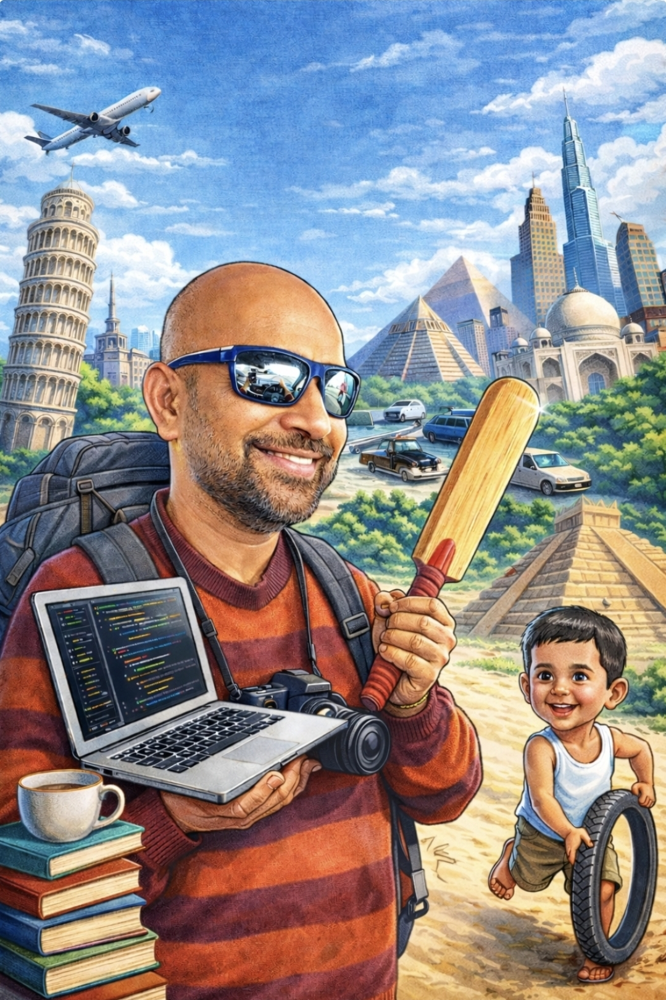

I turn data into insight, challenges into opportunities, and experiences into stories that inspire. From humble beginnings to building a professional journey in data technologies, my path is driven by hardwork, resilience, and a passion for impact.
My journey began in Tando Muhammad Khan , Sindh, Pakistan, where life was simple yet deeply rooted in resilience, faith, and hard work. Those early experiences shaped my perspective and continue to influence the way I approach challenges today. My father was a hard working salt merchant who carried heavy bags on his shoulders to earn a living. He taught me values of hard work. Over time, I have built a career in data engineering, analytics, and visualization—transforming complex datasets into meaningful insights that empower organizations to make smarter, data-driven decisions. I bring expertise across cloud and on-premise environments, along with hands-on experience in AI and machine learning technologies, enabling me to design scalable and impactful data solutions.
Beyond my professional work, I serve as a public speaker and teacher, sharing both my expertise in data and my passion for purpose, faith, and community. Through these platforms, I aim to inspire others to grow, think critically, and use knowledge to create meaningful impact. I am also a passionate traveler, driven by a curiosity to explore diverse cultures, rich histories, and the stories that connect us all.